FEX1001 · Aula 2
Do papel milimetrado à linearização: como fazer um gráfico dizer o que a tabela esconde.
Prof. Rafael de Lima · Departamento de Física · CCT/UDESC
O caminho de hoje
Uma reta é a única curva cujos parâmetros se leem direto do gráfico. Todo o resto da aula é sobre transformar o que você mediu em uma reta — e ler a física no coeficiente angular e no linear.
Parte 1
O que se enxerga num gráfico e não se enxerga numa tabela.
Em vez de olhar para uma tabela de medidas, o cientista olha para o gráfico traçado a partir dela e percebe o comportamento das grandezas envolvidas.
A evolução do salário mínimo, o número de acidentes de trânsito, a ocupação do disco rígido em “pizza”, o eletrocardiograma — a medicina moderna é cheia de aparelhos cujo resultado é um gráfico.
O uso de gráficos na Física é tão importante quanto o conceito de função na Matemática: é a representação visual de como uma grandeza varia em relação a outra.
Nesta disciplina trabalhamos sempre com duas grandezas: uma independente e outra que depende dela.
O tempo flui independentemente de como a velocidade varia; a velocidade é que varia em função de como o tempo flui. Logo \(v = v(t)\), e nunca o contrário.
“Todos os estudantes têm dificuldades no aprendizado da construção de gráficos, e principalmente no uso da técnica da linearização.” E a receita que funciona é uma só: construir muitos gráficos.
Parte 2
Quem vai em cada eixo, e por quê.
Seja uma grandeza dependente \(u\) que varia como função de uma independente \(z\), isto é, \(u = f(z)\).
Eixo x (abscissas): a variável independente.
Eixo y (ordenadas): a variável dependente.
A cada par ordenado \((x_i\,;\,y_i)\) corresponde um ponto \(P_i\); o conjunto deles é a curva da função. Os eixos admitem valores negativos, mas em geral se usa apenas o quadrante em que ambas são positivas.
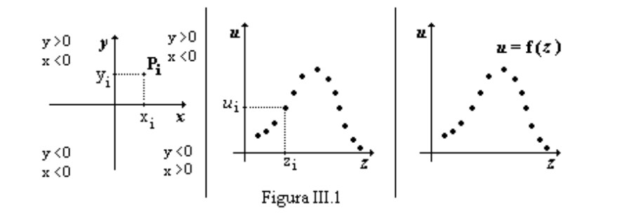
Parte 3
Sete passos, na ordem. O Exemplo 15 do começo ao fim.
Mediu-se o volume \(V\) de uma esfera para várias temperaturas \(T\):
| V (10⁻⁹ m³) | 64,1 | 80,7 | 97,8 | 114,9 | 138,0 | 162,5 | 195,0 | 223,3 | 260,0 |
|---|---|---|---|---|---|---|---|---|---|
| T (°C) | 60,00 | 65,00 | 70,00 | 75,00 | 80,00 | 85,00 | 90,00 | 95,00 | 100,00 |
| i | 1 | 2 | 3 | 4 | 5 | 6 | 7 | 8 | 9 |
À medida que a temperatura aumenta, o volume dilata. O gráfico será V versus T, porque o volume é que depende da temperatura.
Em princípio, qualquer função de uma variável pode ser traçada em papel milimetrado. Não há restrições.
Mais adiante veremos que, para funções exponenciais e de potência, existem papéis que poupam trabalho — o mono-log e o di-log.
A causa no eixo horizontal (x, independente). O efeito no eixo vertical (y, dependente).
Ao medir a distância \(d\) percorrida em um intervalo \(t\), a distância varia conforme o tempo. Dizer que “o tempo varia de acordo com a distância” é um absurdo. Logo: \(d\) versus \(t\), nunca \(t\) versus \(d\).
No Exemplo 15, portanto: V versus T.
No Exemplo 15 o volume está em \(10^{-9}\ \mathrm{m^3}\) — e é assim que deve aparecer no eixo, com a potência inclusa.
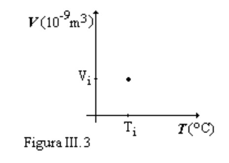
Uma folha milimetrada tem 280 mm num sentido e 180 mm no outro. Escolha entre retrato e paisagem.
A escala que preenche a folha inteira quase nunca é a melhor. Prefira uma escala limpa e fácil de ler, mesmo sobrando papel.
Se você precisa fazer contas para localizar um ponto no gráfico, a escala está inadequada.
A grandeza varia de 64,1 a 260,0. Ignorando a unidade por um momento:
| Posição | Início | Faixa ÷ papel | Escala adotada | Veredito |
|---|---|---|---|---|
| retrato (280 mm) | do zero | 260,0/280 = 0,929 | 1,0 unid. : 1 mm | 260 mm — cabe bem |
| retrato (280 mm) | em 60,0 | 200,0/280 = 0,714 | 1,0 unid. : 1,4 mm | 1,4 mm não é divisão do papel |
| paisagem (180 mm) | do zero | 260,0/180 = 1,444 | 2,0 unid. : 1 mm | 130 mm — sobra muito |
| paisagem (180 mm) | em 60,0 | 200,0/180 = 1,11 | 2,0 unid. : 1 mm | 100 mm — sobra muito |
A escala “mais próxima” de 1,444 seria 1,5 — e todo múltiplo ou submúltiplo de 3 leva a dízima periódica. Evite 0,375; 0,75; 1,5; 3; 6; 9; 12…
Painel · experimente
Varia de 60,00 a 100,00 °C. E vale a regra que muita gente esquece:
A escala de um eixo é totalmente independente da do outro.
| Posição | Início | Escala | Ocupa |
|---|---|---|---|
| paisagem (280 mm) | do zero | 1,00 : 2 mm | 200 mm |
| paisagem (280 mm) | em 60,00 | 1,00 : 5 mm | 200 mm |
| retrato (180 mm) | do zero | 1,00 : 1 mm | 100 mm — sobra muito |
| retrato (180 mm) | em 60,00 | 1,00 : 4 mm | 160 mm — ocupa bem |
Posição do papel: retrato.
Eixo vertical — volume \(V\) — escala 1,0 unidade : 1 mm, começando do zero.
Eixo horizontal — temperatura \(T\) — escala 1,0 unidade : 4 mm, começando em 60,00.
Repare que os dois eixos usam escalas diferentes e pontos de partida diferentes — e está tudo certo.
Preferencialmente 2, 5, 10, 20, 50, 100…
Múltiplos ou submúltiplos de primos e fracionários: 3, 7, 9, 11, 13, 17; 2,5; 3,3; 7,5; 8,25; 12,5…
Jamais indique nos eixos os valores dos pontos experimentais. Os valores dos eixos são referências da escala, não os seus dados.
E os valores indicados devem ter a mesma quantidade de algarismos significativos das medidas: 50,0; 100,0; 150,0 — e não 50; 100; 150.
O ponto precisa ser marcado por um sinal que não deixe dúvida sobre sua localização.
Nada de tracejados do ponto até os eixos. Identifique apenas os pontos experimentais.
O traçado deve ajustar-se o melhor possível aos pontos — não precisa passar por todos.
Nunca una os pontos experimentais por segmentos de reta. Isso afirmaria que a relação entre as grandezas é descontínua, o que dificilmente é verdade.
No gráfico final, o primeiro valor do eixo horizontal foi deslocado levemente para a direita: senão o primeiro ponto cairia em cima do eixo vertical.
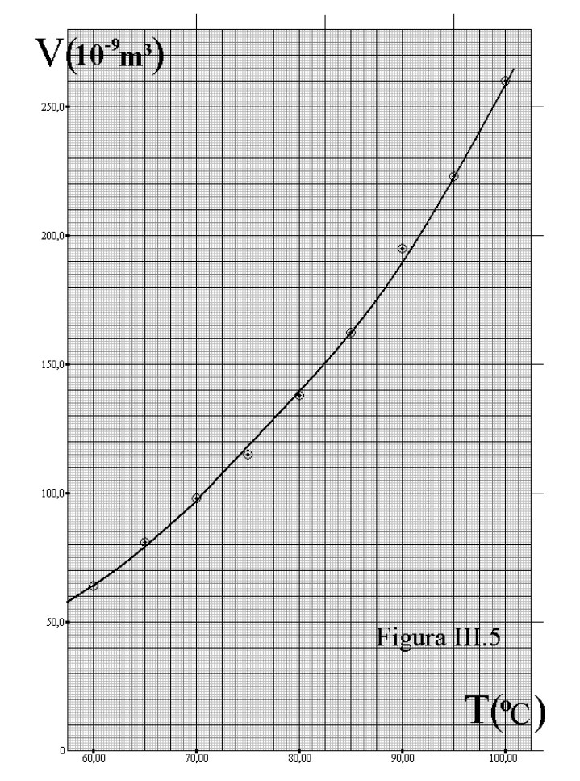
Ligar os pontos por retas · escrever os valores experimentais nos eixos · escala em múltiplos de 3 · esquecer a unidade (com a potência) no eixo.
Parte 4
Quando a curva é uma reta, os dois coeficientes carregam a física.
| v (10⁻³ m/s) | 105,0 | 150,0 | 240,0 | 290,0 | 340,0 | 430,0 | 500,0 |
|---|---|---|---|---|---|---|---|
| t (10⁻² s) | 1,00 | 2,50 | 6,00 | 8,00 | 10,00 | 13,50 | 16,00 |
A velocidade é função do tempo, então o gráfico é v versus t. Seguindo os sete passos, a curva traçada é uma reta.
Sempre que obtiver uma reta num gráfico, calcule os dois coeficientes — e descubra a que grandeza física cada um corresponde.
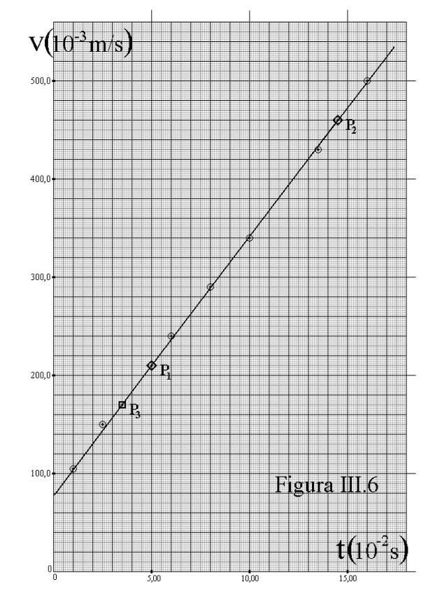
A inclinação. Tem unidade de \([y]/[x]\).
O valor de \(y\) quando \(x = 0\). Tem a unidade de \([y]\).
A partir do gráfico determinamos esses dois números e os associamos a grandezas físicas que não estavam evidentes na tabela. É assim que se extrai informação de um gráfico.
\((x_1,y_1)\) e \((x_2,y_2)\) são dois pontos quaisquer da reta — e não podem ser pontos experimentais. Marque-os no gráfico com uma notação diferente da dos dados.
Por quê? Porque a reta é o ajuste aos dados. Usar um ponto experimental seria dar a ele um peso que ele não tem — e ele pode nem estar sobre a reta.
A unidade saiu \(\mathrm{m/s^2}\): o coeficiente angular é a aceleração do bloco.
Toma-se um terceiro ponto não experimental da reta, \(P_3 = (3{,}50\times10^{-2}\,\mathrm{s}\,;\,170{,}0\times10^{-3}\,\mathrm{m/s})\), e usa-se \(b = y_3 - a x_3\):
\(b = 170{,}0\times10^{-3} - (2{,}63)(3{,}50\times10^{-2}) = 78{,}0\times10^{-3}\ \mathrm{m/s}\)
Quando dá para prolongar a reta até cortar o eixo \(y\) (extrapolação), basta ler o valor em \(x = 0\):
\(b = v(t=0) = 79{,}0\times10^{-3}\ \mathrm{m/s}\)
78,0 contra 79,0 — resultado dos arredondamentos. Os dois são aceitos: a diferença está dentro da margem de erro.
Em um gráfico linear de \(v\) versus \(t\):
\(a = \alpha = 2{,}63\ \mathrm{m/s^2}\) — a aceleração
\(b = v_0 = 79{,}0\times10^{-3}\ \mathrm{m/s}\) — a velocidade inicial
A tabela tinha catorze números. O gráfico entregou duas grandezas físicas e uma equação.
Parte 5
Desentortar a curva para poder ler os coeficientes.
Só sabemos extrair coeficientes de uma reta. Então, diante de uma curva qualquer, a estratégia é transformá-la em reta.
Trocar a variável do eixo horizontal por uma função dela, de modo que a curva “desentorte” e vire reta.
É o conteúdo em que os alunos mais tropeçam — e o que mais aparece nos relatórios das experiências.
| x (m) | 58,0 | 84,0 | 105,0 | 150,0 | 188,0 | 240,0 |
|---|---|---|---|---|---|---|
| t (s) | 5,25 | 7,00 | 8,00 | 10,00 | 11,50 | 13,00 |
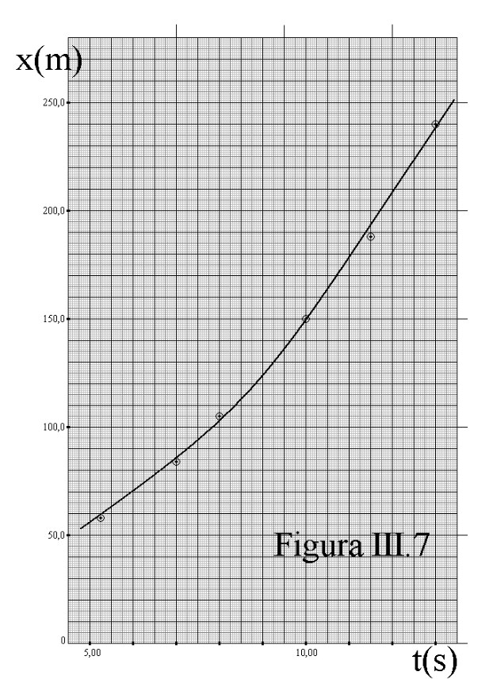
A curva é uma parábola, do tipo
$$ x(t) = \varepsilon t^{2} + \gamma $$Como determinar graficamente \(\varepsilon\) e \(\gamma\)?
Escrevemos a reta com um super-índice “linha”, para não confundir com a outra equação: \(y'(x') = a'x' + b'\). Comparando termo a termo:
Se \(y'\) versus \(x'\) é reta, então \(x\) versus \(t^2\) é reta.
\(x\) versus \(t\) → não linear · \(x\) versus \(t^2\) → linear
| x (m) | 58,0 | 84,0 | 105,0 | 150,0 | 188,0 | 240,0 |
|---|---|---|---|---|---|---|
| t (s) | 5,25 | 7,00 | 8,00 | 10,00 | 11,50 | 13,00 |
| t² (s²) | 27,6 | 49,0 | 64,0 | 100,0 | 132,2 | 169,0 |
Respeite os algarismos significativos ao elevar ao quadrado — e a unidade nova: \(t^2\) está em \(\mathrm{s^2}\), não em s.
\(5{,}25^2 = 27{,}5625\), com três algarismos significativos → 27,6.
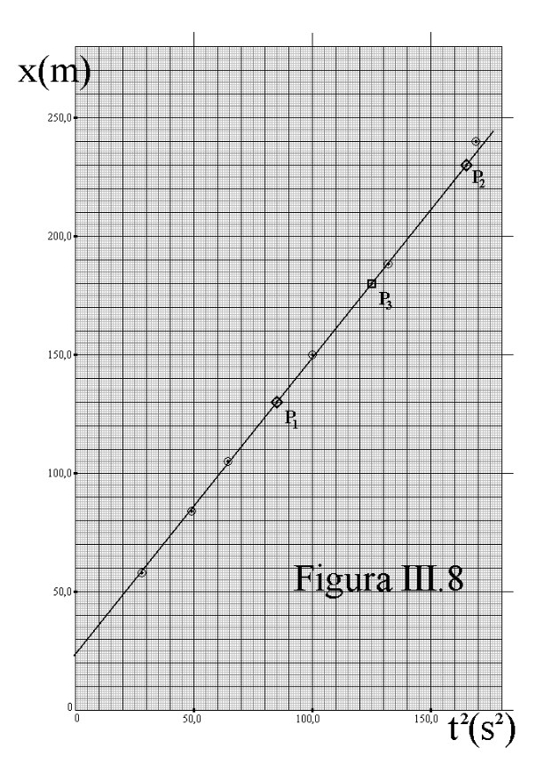
\(\varepsilon = 1{,}25\ \mathrm{m/s^2}\)
\(\gamma = x_0 = 24{,}0\ \mathrm{m}\) — a posição inicial
Para este movimento, \(x(t) = x_0 + v_0 t + \tfrac{1}{2}\alpha t^2\). Como \(v_0 = 0\) e \(\tfrac{1}{2}\alpha = \varepsilon\), a aceleração é \(\alpha = 2\varepsilon = \mathbf{2{,}50\ \mathrm{m/s^2}}\) — e não 1,25. O coeficiente angular nem sempre é a grandeza que você procura: às vezes é um múltiplo dela.
| Equação do fenômeno | Gráfico não linear | Gráfico linearizado |
|---|---|---|
| \(Y = CX^{2} + D\) | Y versus X | Y versus \(X^{2}\) |
| \(Y = CX^{1/2} + D\) | Y versus X | Y versus \(X^{1/2}\) |
| \(Y = CX^{-1} + D\) | Y versus X | Y versus \(X^{-1}\) |
| \(Y = CX^{3} + D\) | Y versus X | Y versus \(X^{3}\) |
| \(Y = C\cos X + D\) | Y versus X | Y versus \(\cos X\) |
| \(Y = C\ln X + D\) | Y versus X | Y versus \(\ln X\) |
| \(Y = Ce^{X} + D\) | Y versus X | Y versus \(e^{X}\) |
| \(Y = CX^{n} + D\) | Y versus X | Y versus \(X^{n}\) |
Em todos: \(C = a'\) (coeficiente angular) e \(D = b'\) (coeficiente linear). O padrão é sempre o mesmo — troque o eixo x pela função que aparece na equação.
Painel · os dois espaços ao mesmo tempo
Parte 6
Para \(y = A e^{Bx}\), o papel já faz o logaritmo por você.
Toda curva pode ser graficada em milimetrado, e a linearização resolve o caso geral. Mas duas famílias de funções variam muito rápido e aparecem o tempo todo em Física: a exponencial e a potência.
Um eixo linear, outro logarítmico. Lineariza \(y = Ae^{Bx}\).
Os dois eixos logarítmicos. Lineariza \(y = kx^{n}\).
Nesses papéis não é preciso calcular a nova tabela de logaritmos: marcam-se os valores medidos diretamente.
| V (μV) | 3,60 | 8,00 | 14,00 | 31,00 | 80,00 | 180,00 | 270,00 |
|---|---|---|---|---|---|---|---|
| t (ms) | 5,00 | 15,00 | 20,00 | 30,00 | 41,50 | 50,00 | 55,00 |
Sabe-se que o fenômeno obedece a \(V(t) = A e^{Bt}\). Como achar \(A\) e \(B\)?
Logo ln V versus t é reta — e é isso que o papel mono-log desenha sozinho.
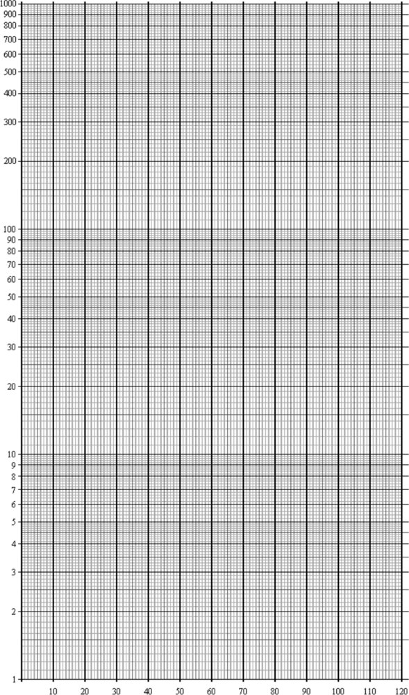
O logaritmo não é definido em zero. A escala começa em qualquer potência de dez: … 0,01; 0,1; 1; 10; 100; 1000 …
No eixo logarítmico não estão representados os valores, mas os logaritmos deles.
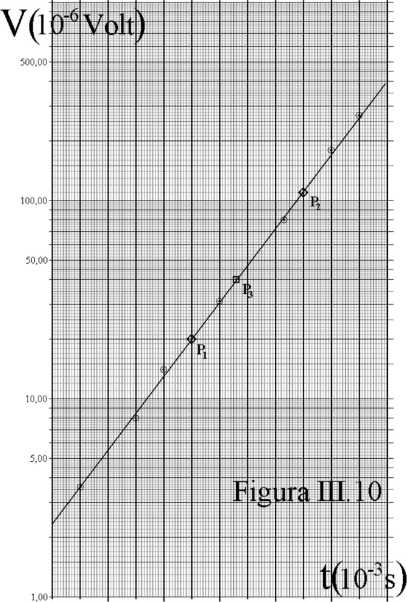
No milimetrado o ponto é \([t_1,\,(\ln V)_1]\); no mono-log é \([t_1,\,\ln(V_1)]\) — lê-se \(V\) direto e o logaritmo entra na conta.
Como \(V(t) = Ae^{Bt}\), então \(V(0) = A\): basta ler onde a reta corta \(t = 0\).
\(A = 2{,}35\ \mathrm{\mu V}\)
Com \(P_3 = (33{,}00\ \mathrm{ms}\,;\,40{,}00\ \mathrm{\mu V})\):
\(A = \dfrac{V_3}{e^{Bt_3}} = \dfrac{40{,}00}{e^{(85{,}24)(0{,}033)}} = 2{,}40\ \mathrm{\mu V}\)
O argumento da exponencial é adimensional. Então a unidade da constante dentro dela é sempre a inversa da unidade de \(x\) — aqui, \(\mathrm{s^{-1}}\).
O gráfico \(y\) versus \(x\) em papel mono-log é uma reta.
Os valores obtidos no mono-log devem concordar com os do gráfico \(\ln y\) versus \(x\) feito em milimetrado. Se não concordarem, algo está errado em um dos dois.
Parte 7
Para \(y = kx^{n}\), quando nem o expoente se conhece.
Muitos fenômenos obedecem a \(y(x) = kx^{n}\). Para linearizar:
Faça \(x' = x^{n}\) e trace \(y\) versus \(x^{n}\) em milimetrado. Reta, e calcula-se \(k\) pelo procedimento de sempre.
É o caso comum. Use o papel di-log — nele o próprio expoente aparece como coeficiente angular.
| I (mA) | 22,0 | 60,0 | 91,0 | 180,0 | 330,0 | 520,0 |
|---|---|---|---|---|---|---|
| V (V) | 0,600 | 2,500 | 4,000 | 11,500 | 26,000 | 49,000 |
O filamento incandescente não é ôhmico: \(I(V) = C V^{w}\), com \(C\) e \(w\) desconhecidos.
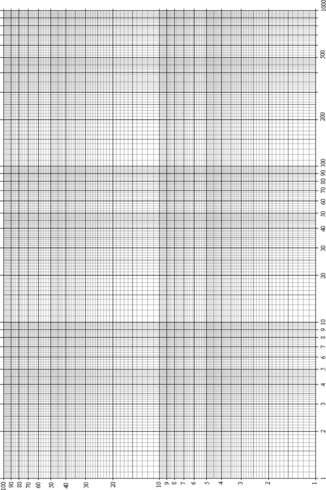
Os dois eixos são logarítmicos, divididos em décadas. Nenhum deles pode começar do zero.
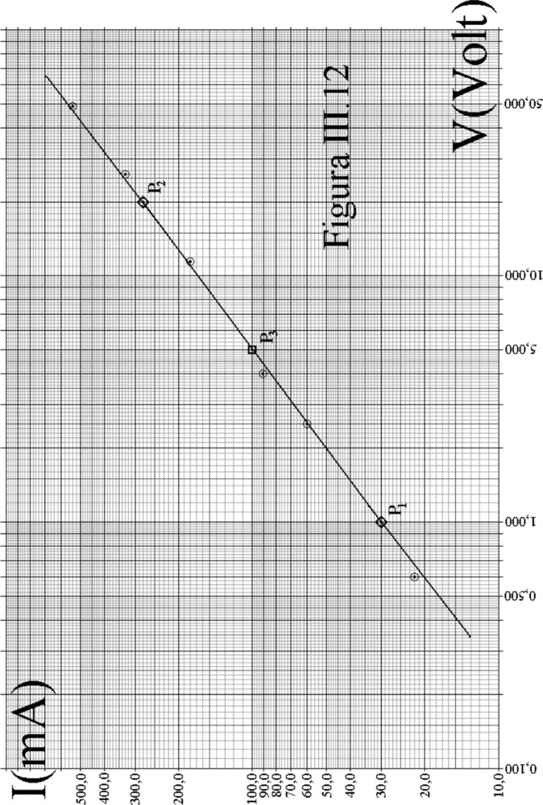
O resultado de um logaritmo é adimensional — como tem de ser, já que \(w\) é um expoente.
Como \(I(V) = CV^{w}\), em \(V = 1\) temos \(I = C\cdot 1^{w} = C\). Basta ler onde a reta cruza a vertical de \(V = 1\).
\(C = 30{,}0\ \mathrm{mA\cdot V^{-0{,}746}}\)
Com \(P_3 = (5{,}000\ \mathrm{V}\,;\,100{,}0\ \mathrm{mA})\):
\(C = \dfrac{I_3}{V_3^{\,w}} = \dfrac{100{,}0}{5{,}000^{0{,}746}} = 30{,}1\ \mathrm{mA\cdot V^{-0{,}746}}\)
De \(y = kx^{n}\) segue \([y] = [k]\,[x]^{n}\), logo \([k] = [y]\,[x]^{-n}\). É por isso que a unidade de \(C\) tem um expoente quebrado — e está correto.
O gráfico \(y\) versus \(x\) em papel di-log é uma reta.
lê-se \(A\) em \(x = 0\)
lê-se \(k\) em \(x = 1\)
| A equação é… | Papel | O que a reta entrega |
|---|---|---|
| \(y = ax + b\) | milimetrado | \(a\) e \(b\) direto |
| \(y = Cx^{n} + D\), com \(n\) conhecido | milimetrado, \(y\) versus \(x^{n}\) | \(C\) e \(D\) |
| \(y = Ae^{Bx}\) | mono-log | \(B\) na inclinação, \(A\) em \(x=0\) |
| \(y = kx^{n}\), com \(n\) desconhecido | di-log | \(n\) na inclinação, \(k\) em \(x=1\) |
Note a diferença entre as duas últimas linhas: a exponencial tem o \(x\) no expoente; a potência tem o \(x\) na base. Trocar uma pela outra é o engano mais comum na hora de escolher o papel.
Parte 8
Quando a inclinação de uma reta mudou a ideia que se tinha do universo.
1929 · Edwin Hubble
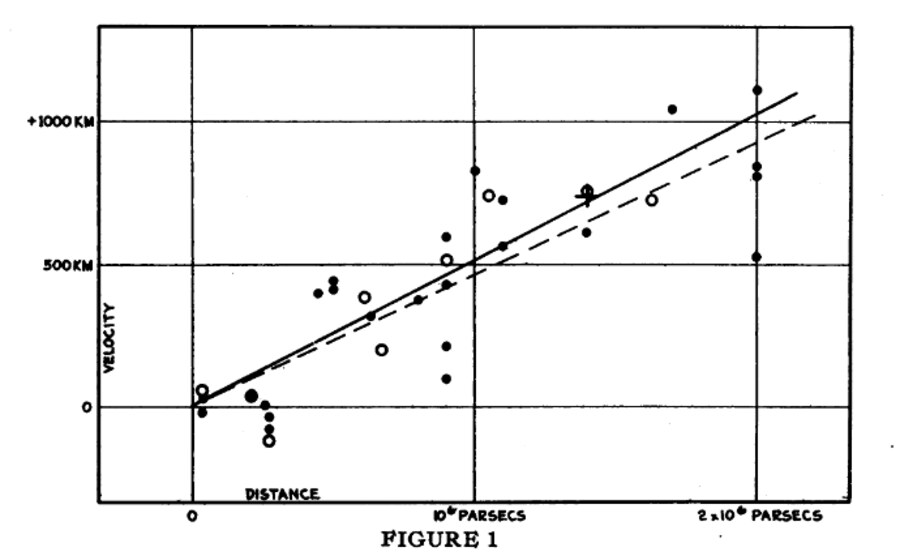
E. Hubble, PNAS 15, 168 (1929) · domínio público
Hubble marcou a velocidade radial de galáxias contra a distância delas. Vinte e poucos pontos, bem espalhados.
O coeficiente angular dizia que quanto mais longe a galáxia, mais rápido ela se afasta — e proporcionalmente à distância. Era a assinatura de um universo em expansão.
O gráfico tem exatamente a estrutura que estudamos hoje: pontos experimentais, uma reta ajustada, e um coeficiente angular que é uma grandeza física — hoje chamada de constante de Hubble.
Os pontos de Hubble estão longe da reta. Ele não os “ajeitou”: traçou a reta que melhor os representa e deixou a dispersão à vista.
Ela passa entre eles. É por isso que os pontos usados para calcular os coeficientes não podem ser experimentais.
A inclinação que Hubble obteve dava uma idade para o universo menor que a idade da Terra — o eixo das distâncias estava sistematicamente errado. A forma do gráfico estava certa; a calibração do eixo, não. Um erro sistemático, como os da Aula 1.
Parte 9
Escolha o fenômeno, escolha a transformação, veja se endireita.
Simulação
Parte 10
Enunciados completos nas páginas 30 e 31 da Apostila 2.
Os exercícios 2 e 3 pedem deliberadamente os dois caminhos — o trabalhoso e o do papel especial — para você conferir que dão o mesmo resultado.
O expoente é \(-\lambda/RT\), com o \(T\) no denominador. A linearização não é \(\ln P\) versus \(T\), e sim \(\ln P\) versus \(1/T\). Ler a equação com atenção antes de escolher o eixo vale mais que qualquer regra decorada.
Olhando a equação do fenômeno, o que precisa ir no eixo x para que ela vire \(y = ax + b\)? A resposta é a linearização.
Para levar da aula
Apostila 2 e material completo em github.com/RafaelCRdeLima/FEX1001
FEX1001 · Física Experimental I · Prof. Rafael de Lima · CCT/UDESC